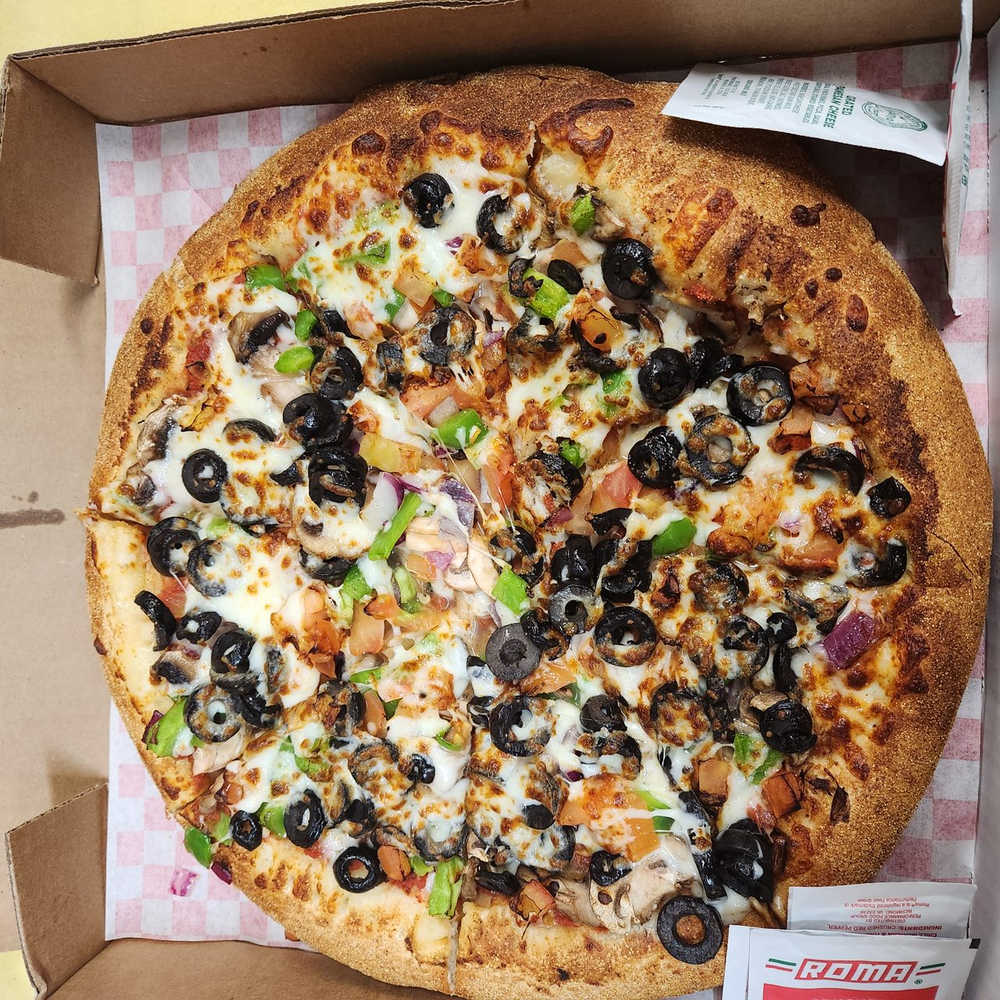

Seniores vegetarian pizza recipe

The most delicious pizza you will ever have the luxury of devouring
Being a broke hungry kid with broke hungry friends made the already hard dilemma of not knowing what you want to eat even harder
Without a big budget and not many options besides fast food you can imagine how hard it was for us to decide what we wanted to eat
Thanks to a man who lived in the 1800's by the name of Raffaele Esposito we didn't have to think that hard!
Whenever me and my friends were in the predicament of being hungry and broke (which was always) we would usally always decide to pile up our money and buy a pizza to share!
Fast forward to when I became 17 I had the privelage to work for my uncle in his pizza shop and when I tried his pizza it changed my world!
Now I am sharing this recipe with the rest of the world so everyone else can experience the emotions I did when I tried his pizza for the first time!
Ingredients
- Dough (homemade or premade)
- Marinara sauce (homemade or premade)
- Mozzarella cheese blend
- Red onion
- Black olives
- Bell pepper
- Mushrooms
- (Tomatoes optional)
Pro tip - it may sound dumb but if you want an authentic flavor I would head to my local pizzeria and buy raw dough, sauce, and cheese
Instructions
- First you want to take your ball of dough and roll it to your desired pizza shape (Knead and roll but dont overdo it as this will remove alot of the air from your dough causing it to be less fluffy and crispy)
- Once you have your dough ready you take your sauce and apply a generous amount without getting too close to the edges(this will be your crust)
- Next you want to add a light layer of cheese on top of your sauce
- Now you are ready to spread your veggies evenly around the middle
- Last but not least you add as much cheese as your heart desires and bake it in the oven until it is cooked through and your desired crispiness!
Now you know how to make one of the best pizzas ever and have a new dish to bring to parties that will definitely have people asking "Who made this?"
Go back to main page